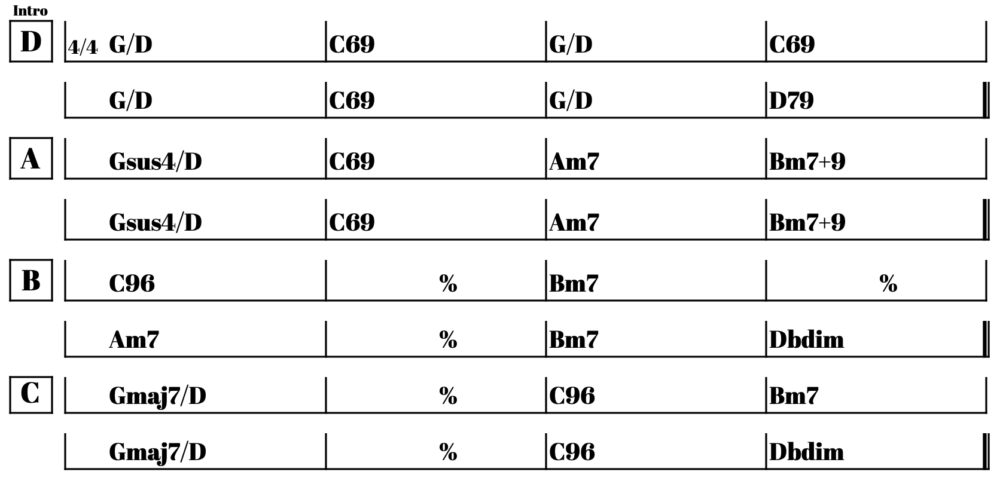

0020.
静かに雨が降る
A
月の光をたよりに ここまで歩き
消えぬ世界の姿を 思い起している
B
あかりの消えた街に 静かに雨が降る
瓦礫になった街に 静かに雨が降る
A
通りには意味のない台詞が浮かんでは消えて
終わりは 引きのばされ 行き先は隠されて
B
みんな流された街に 静かに雨が降る
マーチを奏でるバンドに 静かに雨が降る
C
同じ雨は もうすぐ ここにも やってくる
人々の 終わりが 済んでも 静かに
D
降り続ける
A
平和な土地 人々が 静かに眠る場所
遠くの 小さな灯りが やすらぎの しるし
B
並ぶ 塩の柱に 静かに雨が降る
乗り捨てられた 舟に 静かに雨が降る
C
その雨は もうすぐ ここにも やってくる
星が落ち 森が 枯れても 静かに
D
降り続ける
